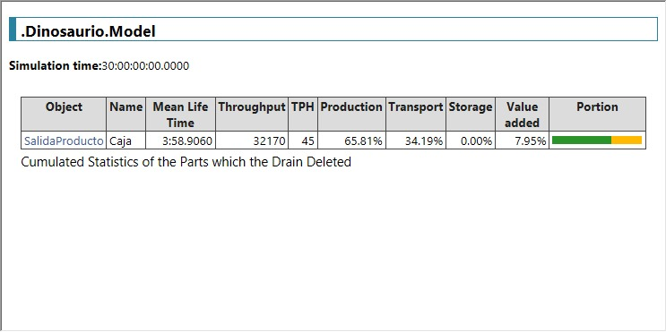
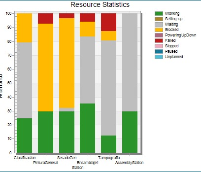

<!DOCTYPE html>
<html lang="en">
    <head>
        <meta charset="UTF-8">
        <meta name="viewport" content="width=device-width, initial-scale=1.0">
        <title>Gestion de Produccion y Automatización - Red Forge Toys</title>
        <link rel="stylesheet" href="styles/styles.css">
        <link rel="stylesheet" href="styles/gest_produccion.css">
        <script src="https://cdn.jsdelivr.net/npm/chart.js"></script>
        <script src="https://cdn.jsdelivr.net/npm/chartjs-plugin-datalabels"></script>
    </head>
</html>
<body>
    <header>
        
        <h1>Red Forge Toys</h1>
        <p>Innovación y Automatización para un Futuro Divertido</p>
        <nav>
            <ul class="menu">
                <li><a class="menu home" href="index.html" data-title="Home"><span><span>Home</span></span></a></li>
                <li><a class="menu gestion" href="gestion.html" data-title="Gestión de Proyecto"><span><span>Gestión de Proyecto</span></span></a></li>
                <li><a class="menu Produccion" href="gest_produccion.html" data-title="Gestión de Producción y Automatización"><span><span>Gestión de Producción y Automatización</span></span></a></li>
                <li><a class="menu evaluacion" href="economica.html" data-title="Evaluación Económica del Proyecto"><span><span>Evaluación Económica del Proyecto</span></span></a></li>
                <li><a class="menu celda" href="Celda.html" data-title="Celda de Manufactura Robotizada"><span><span>Celda de Manufactura Robotizada</span></span></a></li>
                <li><a class="menu digital" href="digital_factory.html" data-title="Digital Factory"><span><span>Digital Factory</span></span></a></li>
                <li><a class="menu plc" href="plc.html" data-title="Controladores Industriales (PLC)"><span><span>Controladores Industriales (PLC)</span></span></a></li>
                <li><a class="menu scada" href="scada.html" data-title="Sistema de Supervisión SCADA"><span><span>Sistema de Supervisión SCADA</span></span></a></li>            
                <li><a class="menu comentarios" href="comments.html" data-title="Comentarios"><span><span>Comentarios</span></span></a></li>         
            </ul>
        </nav>
    </header>
    <main>
        <section class="seccion1">
            <div class="texto">
                <h1>Gestión de producción</h1>
                <p>
                    Para hacer un proceso de automatización adecuado, es necesario tener un entendimiento del proceso a autmatizar
                    y de los efectos que este tendra en la eficiencia y produccion. En esta seccion se estan los diagramas de Value Stream Mapping
                    de antes y despues de la automatización, junto con las simulaciones para obseravar los cambios que hace esta en la cadena
                    de automatización.
                </p>
            </div>
            <div class="imagen">
                
            </div>
        </section>
        <section class="seccion">
            <h2>Diagramas de VSM</h2>
            <div class="container">
                <div class="imagen_izquierda"></div>
                <div class="texto_derecho"><h3>Diagrama VSM pre-automatizacion</h3>
                <p>En este diagrama se puede ver que la estructura de la planta cuenta con una cantidad relativamente alta de empleados, un total de 14 por turno y 28 en total
                    para los 2 turnos del dia. Se puede ver que los diferentes procesos tienen un tiempo alto, donde los procesos de pintura general y especifica toman 90 segundos y 120 segundos respectivamente,
                    ademas despues de cada uno de estos procesos ocurre un secado que puede tomar hasta 3 minutos. Los tiempos de transporte tambien son un consumo de tiempo alto, especialmente entre el secado general
                    y las pintura especifica.
                </p></div>
                <div class="imagen_derecha"></div>
                <div class="texto_izquierdo"><h3>Diagrama VSM post-automatizacion</h3><p>
                    Al aplicar el proceso de automatización se ve una reduccion considerable en los tiempos de varios procesos, como por ejemplo en los tiempos de secado, pintura y 
                    el propio transporte. La pintura general ahora toma una tercera parte del tiempo original, siendo ahora 30 segundos, de igual forma el tiempo de pintado especifico tambien se
                    redujo de manera notable psando a 10 segundos.Los tiempos de secado tambien se redujeron de forma considerable, tomando un tiempo maximo de 40 segundos, un poco mas de 4 minutos menos que
                    el proceso antes de la automatización. Tambien se ve una dimsinucion en los tiempos de transporte en la planta.
                </p></div>
            </div>
        </section>
        <section class="seccion">
            <h2>Simulación de Technomatix</h2>
            <div class = "contenedor">
                <div class = "image2">
                    
                    <figcaption>Diseño de la planta</figcaption>
                </div>
                <div class = "analisis">
                    Se tienen los siguientes pasos para la produccion del juguete:
                    <ol>
                        <li>Zona de clasificacion: Primera etapa donde se clasifican las piezas que lleguen a la planta de acuerdo a la parte del juguete que sean, donde se colocan en una bandeja a espera de ser enviadas a la
                            zona de pintura general.
                        </li>
                        <li>
                            Pintura general: En esta seccion se aplica la primera capa de pintura a las piezas, el proceso consiste en bajar una bandeja con una rejilla mediante un actuador lineal a un contenedor con pintura,
                            se deja reposar unos segundos y despues se eleva, quedando un tiempo adicional para escurrir la pintura excedente.
                        </li>
                        <li>
                            Ensamblaje: Se hace el proceso de ensamblaje de manera manual por medio de los trabajadores de la planta.
                        </li>
                        <li>
                            Tampografia: Se aplica una segunda capa de pintura a las figura utilizando maquinas tampograficas debido a su rapidez y capacidad de crear detalles pequeños a partir de los moldes base.
                        </li>
                        <li>
                            Celda robotizada de empaquetado: Se utiliza una celda robotizada para hacer el empaquetado de los juguetes en las cajas, se explorara esta con mayor detalle en la seccion de celda robotizada.
                        </li>
                    </ol>
                </div>
            </div>
        </section>
        <section class="seccion">
            <h2>Resultados de Technomatix</h2>
            <div class = "contenedor2">
                <div class = "image3">
                    
                    <figcaption>Resumen de la simulacion</figcaption>
                </div>
                <div class = "image3">
                    
                    <figcaption>Ocupacion de las estaciones</figcaption>
                </div>
            </div>
            <p>
                Al correr las simulaciones se puede ver que las estaciones estan trabajando aproximadamente un 25% del tiempo, esto se debe a cuellos de botella donde principalmente las estaciones de pintura general y secado general
                estan bloqueadas, incapaces de mover sus productos hacia la siguiente estacion, dando una oportunidad de mejora en el diseño general de la planta y el como se conecta una estacion con otro. En el resumen final de la simulacion
                se ve que 
            </p>
        </section>
    </main>
    <footer>
        <p>&copy; 2025 Red Forge Toys. Todos los derechos reservados.</p>
    </footer>
</body>